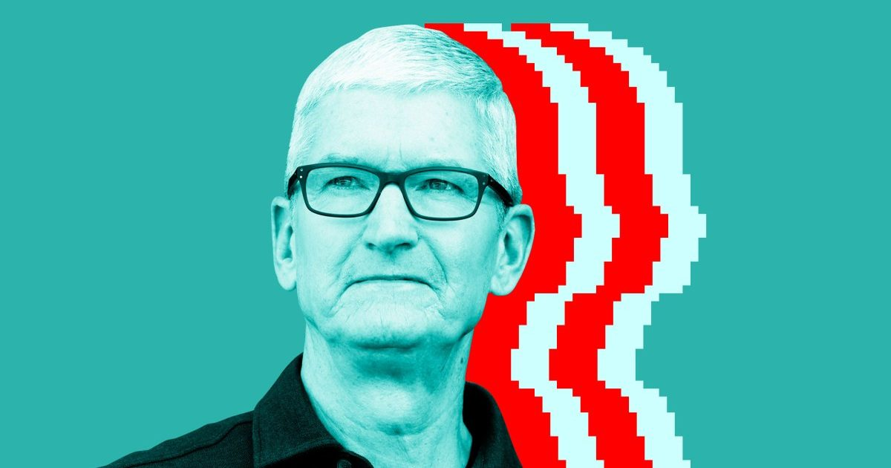

Тим Кук говорит: «Я не вмешиваюсь» в бизнес нового генерального директора Apple
Тим Кук ушел с поста генерального директора Apple в сентябре, передав высшую должность бывшему руководителю аппаратного обеспечения Джону Тернусу и взяв на себя роль исполнительного председателя.
Кук по-прежнему является заметным представителем компании, недавно он был сфотографирован на государственном ужине в Белом доме.
Но в интервью The Independent Кук говорит, что …